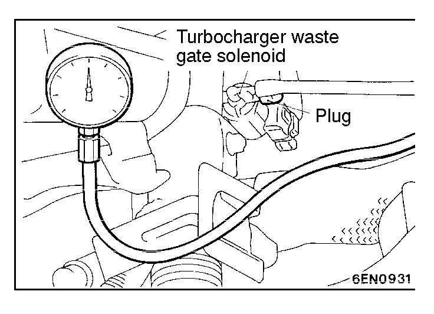

![[Previous]](https://mitsubishitechinfo.com/data/F24S/BUTTONS/fprevg.png)
![[Next]](https://mitsubishitechinfo.com/data/F24S/BUTTONS/fnextg.png)


TURBOCHARGER SUPERCHARGING
PRESSURE CHECK <Turbo>
Caution
Do a test drive with two passengers in the vehicle and where full throttle acceleration can be safely made.
A driver should not read the pressure gauge, but a front passenger should.
(1)Disconnect the hose (black) from the turbocharger waste gate solenoid, and connect the pressure gauge to the hose. Plug the nipple of the solenoid valve from which the hose (black) has been disconnected.
(2)Drive the vehicle with full throttle and accelerate the engine to a speed of more than 3,500 r/min at 2nd gear. Measure the supercharging pressure when the pointer is stabilized.
Standard value: 44 - 101 kPa (6.4 - 14.7 psi)
(3)If the supercharging pressure deviates from the standard value, check the following items for possible causes.
When pressure is high:
•Malfunction of turbocharger waste gate actuator
•Malfunction of turbocharger waste gate valve
•Disconnected or cracked turbocharger waste gate actuator hose
When pressure is low:
•Malfunction of turbocharger waste gate actuator
•Supercharging pressure leaks
•Faulty turbocharger